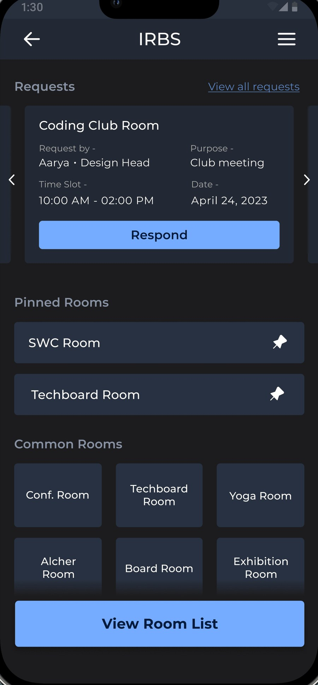
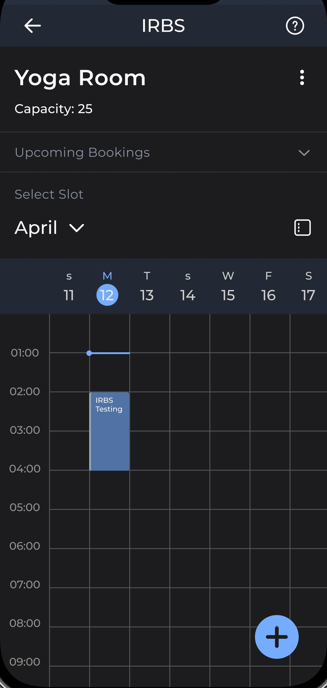
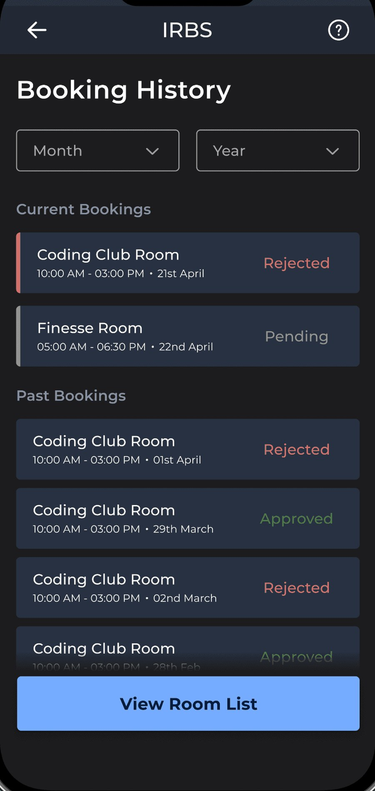
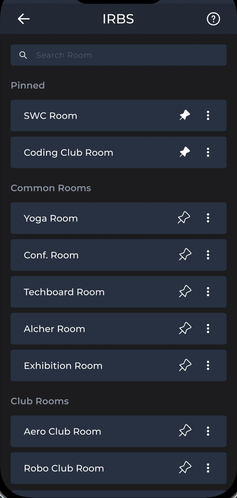
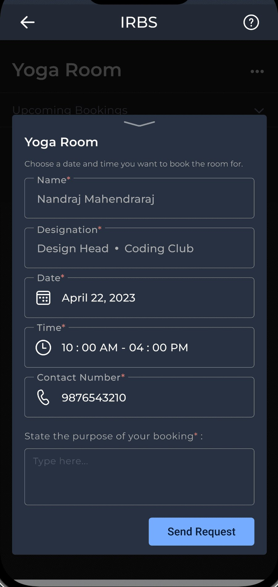

Same sticky frame, same scroll-driven progress, same vertical callout track. The five specimens now travel left → right inside the phone instead of bottom → top. Three scroll spans below; the shipped page is currently 515vh.




